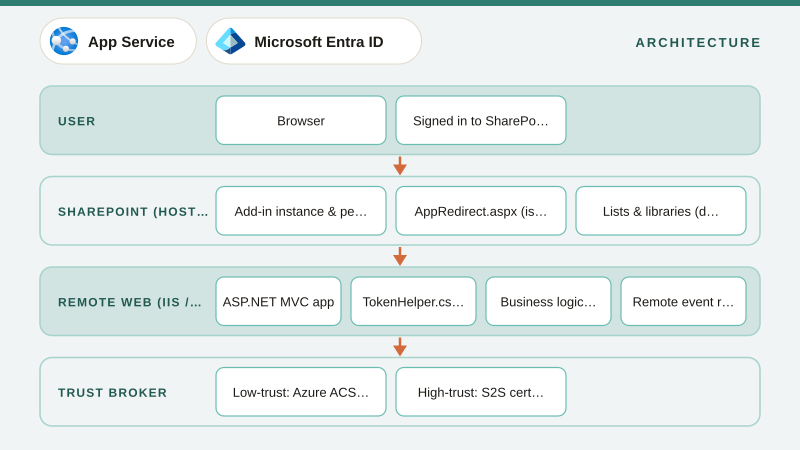
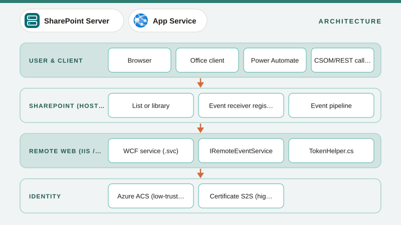
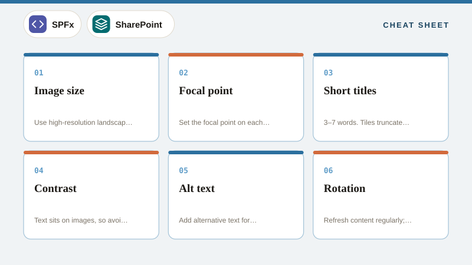
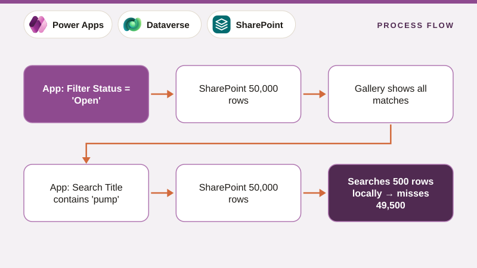

HistoryTimelines
SharePoint & Microsoft 365 Timeline, 2001–2026
Every major release, platform shift and retirement from SharePoint Portal Server 2001 to the agents era, in one interactive timeline with context on why each change happened.
SharePoint
Workflow & Forms
Migration
Copilot & AI
Design & Docs
Interview Q&A
SharePoint · Power Platform · Microsoft 365
In-depth guides with architecture diagrams, working code, migration playbooks and interview preparation, from SharePoint Portal Server 2001 to Copilot agents in 2026.
PopularRemote event receiversProvider-hosted CRUDSPFx + DataverseSPFx + Azure TablesDelegationShareGate PowerShellNintex to NACHLD template
Every major release, platform shift and retirement from SharePoint Portal Server 2001 to the agents era, in one interactive timeline with context on why each change happened.
Top stories





A deep dive into the Hero web part, covering tiles and layers layouts (1–5 items), image sizes, call-to-action links, dynamic content from a library, accessibility, and how to automate Hero configuration.

What delegation is, why non-delegable formulas silently return wrong results, delegable functions per data source (SharePoint, Dataverse, SQL), the data row limit, warning signs, and proven patterns to build apps over large lists.

A field-tested approach to moving Nintex for Office 365 workflows and forms to NAC, covering inventory, the Nintex migration tool, action mapping, redesigning list-bound workflows, rebuilding forms, connections, in-flight instances, testing, cut-over and lessons learned.

A complete HLD guide, covering purpose and audience, architecture overview diagrams, component inventory, data architecture and platform choice, integration, security and identity, licensing, ALM and environments, NFRs, risks and decisions (ADRs), with a worked Deviation Management System HLD.
2001–2026
25 years of SharePoint and its ecosystem: every version, every platform shift, and what Microsoft retired along the way.
2001–2026 · SE
Farm architecture, service applications, SSOM/CSOM, event receivers, add-ins, workflows, upgrades and Subscription Edition.
2011–2026
Modern sites, hubs, web parts, lists, formatting JSON, provisioning, permissions, search, governance and tenant administration.
2017–2026
Web parts, extensions, ACEs, PnPjs, Graph, and SPFx connected to Dataverse, Azure Functions, Table Storage and SQL, plus CI/CD and upgrades.
2016–2026
Canvas apps, model-driven apps, Power Fx, delegation, components, PCF, custom pages, Power Pages and ALM.
2016–2026
Cloud flows, SharePoint automation, approvals, expressions, error handling, Graph via HTTP, desktop flows and enterprise ALM.
2016–2026
Tables, relationships, the security model, Web API and SDK CRUD, plug-ins, formula columns, solutions and integration.
2019–2026
Power Query M, standard and analytical dataflows, loading SharePoint and on-prem data into Dataverse, gateways, incremental refresh and Fabric Gen2.
2006–2026
Nintex Workflow & Forms on-prem, Nintex for Office 365, Nintex Automation Cloud (NAC), Xtensions, DocGen and migration to NAC.
2003–2026
InfoPath forms, data connections and code-behind, SharePoint 2010/2013 workflows, SharePoint Designer, retirement dates and migration paths.
2007–2026
Migration strategy and assessment, ShareGate in depth, SPMT and Migration Manager, on-prem to online, on-prem to on-prem, tenant-to-tenant and validation.
2010–2026
Entra ID app registrations, Sites.Selected, Azure Functions, webhooks, Table and Blob storage, SQL, Key Vault, APIM, messaging and monitoring.
2007–2026
SSOM vs CSOM vs REST vs Graph, REST and Graph cheat sheets, batching, delta, change notifications, auth flows, throttling and the PnP ecosystem.
2023–2026
Microsoft 365 Copilot architecture, SharePoint agents, Copilot Studio, declarative agents, AI Builder, SharePoint Premium and content readiness.
SDLC
Requirements (BRD/FRD), HLD and LLD templates with worked examples, SUDs, test strategy, runbooks, governance, estimation and full case studies.
All eras
Hundreds of questions with crisp answers for SharePoint, SPFx, Power Platform, Dataverse, Nintex, migration and Azure, plus scenario and lead-level rounds.